layout(t(1:3))
v <- function(x,a) -a * x + x^3
curve(v(x,a=-2),-3,3,bty='n')
curve(v(x,a=0),-3,3,bty='n')
curve(v(x,a=2),-3,3,bty='n')3 Transitions in complex systems
3.1 Introduction
My dissertation research was on the theory of Piaget, who proposed a stage theory of cognitive development. These stages were separated by transitions. One such transition should occur between the pre-operational and concrete-operational stages. In the latter stage, children learn logical, concrete physical rules about objects, such as weight, height, and volume. The most famous test to distinguish between the two stages is the conservation task.
There are many conservation tasks, but the setup is always the same. For example, you show a child two equal balls of clay, ask for confirmation that they weigh the same, roll one into a sausage shape, and then ask again for confirmation of equal weight. A non-conserving child will now claim that the longer sausage weighs more. One can also do this with two rows of coins (spreading one row out) or two glasses of water (pouring the water from one glass into a smaller longer glass). It is actually a fascinating task, a real fun task to do with children between 5 and 8 years old.
From the 1960’s to the 1980’s, this was a topic of major interest in developmental psychology, and hundreds of papers were published on the subject . A key question was whether there was really a stage transition, and there was a lot of confusion about what a transition actually was. It was my task to clarify this and to prove Piaget’s hypothesis. I think I succeeded in clarifying the question, but whether I succeeded in proving the stage theory is debatable.1
The idea of Peter Molenaar, my thesis advisor, was to use catastrophe theory to define the concept of a transition in a precise way, to use the so-called catastrophe flags to test the hypothesis of a transition, and also to fit a cusp model to the conservation data. It took me, with the help of many people, more than 20 years to do all these steps (Van der Maas and Molenaar 1992a; Jansen and Van der Maas 2001b; Dolan and Maas 1998; Grasman, Maas, and Wagenmakers 2009).
What is catastrophe theory, what are these flags, and what is the cusp? These are the first questions I will answer in this chapter. But this chapter is also about statistics. You will learn how to fit a cusp model to data. I will present a methodology for studying transitions in areas where we do not have a mathematical description of the underlying system. I will present examples from very different subfields of psychology. Finally, I will discuss the criticisms that were made in response to the hype around catastrophe theory about 50 years ago. This is a long chapter, but I have included only what is necessary to make intelligent use of this approach. This requires some basic understanding of the mathematics of catastrophe theory, a good overview of the possibilities for testing cusp models, and knowledge of the controversies from the early days of the popularization of this theory.
3.2 Examples of transitions
In chapter 1, I stated that complex systems tend to be characterized by a limited number of equilibria. As we have seen in the previous chapter, these equilibria can take many different forms, but in this chapter, we consider only stable and unstable fixed points. We are particularly interested in the case where the configuration of stable and unstable points changes due to a smooth change in some external variable, a control variable. In such a case a discontinuous change or a (first order) phase transition can occur. A transition or tipping point is the second of the three intriguing properties of complex systems (chaos being the first).
I call it an intriguing property because in the linear systems we are used to, smooth changes in control variables lead to similar (proportional) changes in behavior variables. We may see a big change in some behavior, but this requires a big change in the controls. An example would be the speed of your bike and the force you apply. But in the case of fear or panic, this process is often non-linear. If a smooth change in an independent or control variable, such as the smell of smoke, leads to a sudden jump in fear (e.g., panic), we are likely to be dealing with a phase transition.
A key physical example is the change in state of water. Between, say, 10 and 80 degrees Celsius, a smooth change in temperature results in only a slight change in the liquid state of water. But if we change the temperature very slowly, close to the thresholds of 0 or 100 degrees Celsius, we see sudden phase transitions.
We saw something similar for the logistic map when \(r\) crossed the boundary \(r = 1\). However, this did not lead to a sudden change in \(X^{*}\). This is often called a second order phase transition, meaning that the configuration of stable and unstable points changes, but there is no discontinuous change in behavior.
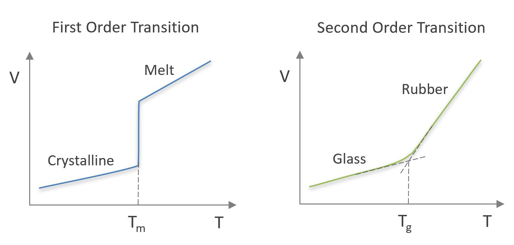
Discontinuous phase transitions such as melting and freezing occur in many systems. Famous examples from the natural sciences include collapsing bridges, turning over ships, cell division, and climate transitions such as the onset of ice ages. Examples from the social sciences include conflict, war, and revolution. Some examples from psychology are falling asleep, outbursts of aggression, radicalization, falling in love, sudden insights, relapses into depression or addiction, panic, and multistable perception.
Building and testing models of these psychological transitions is challenging but rewarding. These transitions represent significant changes, in contrast to the smaller, often marginally significant effects typically observed in psychological intervention studies. During these transitions, there is a profound change in psychological systems.
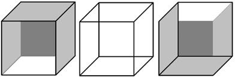
3.3 Bifurcation and Catastrophe theory
Bifurcation theory is a branch of mathematics that studies changes in the qualitative or topological structure of a given family of dynamical systems as parameters are smoothly varied. Such changes are called bifurcations when, for example, equilibria disappear, appear, or split. Simply put, it studies how small changes in parameters or conditions can lead to large changes in outcomes in mathematical systems.
Catastrophe theory can be viewed of as a branch of bifurcation theory, describing a subclass of bifurcations. It was developed by Rene Thom (1977) and popularized by Zeeman (1976). The reason I chose to focus on catastrophe theory in this chapter is fourfold: Firstly, it provides one of the few systematic treatments of bifurcations. A systematic treatment is more effective than simply listing all types of bifurcations. Secondly, once you have a grasp of the basics of catastrophe theory, it becomes easier to learn about other bifurcations not encompassed by this theory. Thirdly, it is most widely used approach in psychology and the social sciences. Finally, the field has developed an empirical program and statistical procedures for the practical application of catastrophe theory.
Catastrophe theory is concerned with gradient systems, in which some quantity is minimized or maximized. These are dynamic systems that can be described by a potential function. Potential functions can be thought of as landscapes with minima and maxima in which we throw a ball and see where it ends up. The simplest case, discussed in the next section, is the quadratic minimum. We can also study what happens to the ball if the landscape changes shape smoothly and a minimum disappears. Then sudden jumps can occur.
Minima and maxima are called critical points, points where the first derivative of the potential function is zero. Catastrophe theory analyzes so-called degenerate critical points of the potential function — points where not only the first derivative, but also the second derivative of the potential function is zero. Phase transitions can occur at these bifurcation points. Thom proved that there are only seven fundamental types of catastrophes (given a limited set of control parameters). I will start with a mathematical introduction and, after explaining the main concepts, give some psychological examples. An in depth discussion of the role of potential functions in catastrophe theory can be found in the introduction of Chapter 1 of Gilmore (1993).
3.3.1 The quadratic case
Thom’s theorems are known to be highly complicated, but the basic concepts are actually not that difficult to grasp. The simplest potential function is
\[ V(X) = X^{2} \tag{3.1}\]
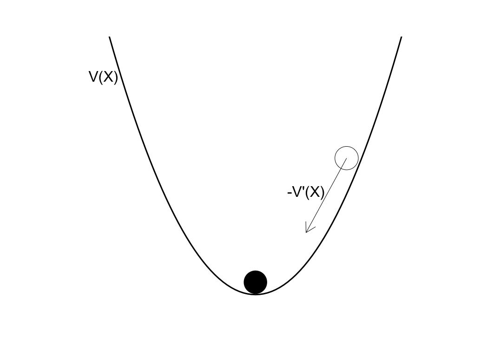
You can imagine a ball in a landscape. The ball will roll to the minimum of the potential function. We learned in school that this is the point where the first derivative is zero and the second derivative is positive. The first and second derivatives are \(V^{'}(X) = 2X\) and \(V^{''}(X) = 2\), respectively. At \(X = 0\) we find the minimum.
The potential function describes a dynamical system defined by
\[ \frac{dX}{dt} = - V^{'}(X). \tag{3.2}\]
This makes sense. When the ball is in \((1,1)\), \(- V^{'}(X) = - 2\) and the ball will move towards \(X = 0\). But if \(X = 0\), \(- V^{'}(X) = 0\), and the ball will not move anymore. In the case of the quadratic potential function, there is only one fixed point. By adding parameters and lower order terms to V, i.e., \({aX + X}^{2}\), we can move its location, but the qualitative form (one stable fixed point) will not change. Also note that the second derivative is positive, which tells us that we are dealing with a minimum and not a maximum (the so-called second derivative test).
Many dynamical systems behave according to this potential function. Nothing spectacular happens: no bifurcations and no jumps. This is different when we consider potential functions with higher order terms.
3.3.2 The fold catastrophe
The fold catastrophe is defined by the potential function
\[ V(X) = {- aX + X}^{3}. \tag{3.3}\]
This function has a degenerate critical (bifurcation) point at \(X = 0,\ \ a = 0\), because at this point \(V^{'}(X) = - a + 3X^{2} = 0\) and \(V^{''}(X) = 6X = 0\), so both the first and second derivative are zero. What makes this point so special? This is illustrated in Figure 3.4.
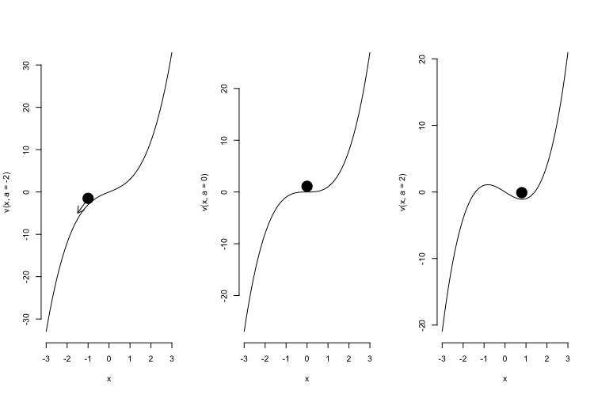
In the left plot, \(a < 0\) and there is no fixed point, the ball rolls away to minus infinity. This can be checked by setting the first derivative to zero, which gives \(X = \pm \sqrt{\frac{a}{3}}\). For negative \(a\) there is no solution. A positive value of \(a\) gives two solutions, as shown on the right for \(a = 2\). The positive solution \(X = \sqrt{\frac{2}{3}\ }\)is a stable fixed point because the second derivative in this point is positive. The negative solution \(X = - \sqrt{\frac{2}{3}\ }\) is an unstable fixed point because the second derivative in this point is negative.
The middle figure depicts the case just in between these two cases. Here the equilibrium is an inflection point, a degenerate critical point. The bifurcation occurs at this point as we go from a landscape with no fixed points to one with two, one stable and one unstable.
Another way to visualize this is making a bifurcation diagram as we did for the logistic map. On the x-axis we put \(a\), from -1 to 2. On the y-axis we plot \(X^{*}\), the fixed points of Equation 3.3. We use lines for stable fixed points and dashed lines for unstable points. The diagram is shown in Figure 3.5.
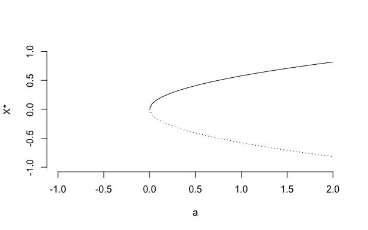
This bifurcation diagram may not look as spectacular as the logistic map, but its importance cannot be overstated. The fold is everywhere! In a fascinating book, The Seduction of Curves (McRobie 2017), McRobie shows that whenever we see an edge, we see a fold. Figure 3.6 is from the book where he demonstrates how different catastrophes appear in art. I also recommend his YouTube lecture.

The fold catastrophe has been studied in fields ranging from evolution theory (Dodson and Hallam 1977) to buoyancy in diving (Güémez, Fiolhais, and Fiolhais 2002). In addition, higher order catastrophes are composed of folds. The fold catastrophe is also known as a saddle node, tangential or blue-sky bifurcation. It is an example of a second order phase transition. It is not accompanied by sudden jumps in behavior.
3.3.3 The cusp catastrophe
Sudden jumps between stable states are associated with first order phase transitions. The cusp, the best-known catastrophe, is the simplest catastrophe with this behavior. The potential function of the cusp is
\[ V(X) = - aX - \frac{1}{2}bX^{2} + \frac{1}{4}X^{4}. \tag{3.4}\]
The half and quarter are added to make later derivations a little easier. The highest power is now 4. The first two terms contain the control variables \(a\) and \(b\), known as the normal and splitting variables. You might ask why there is no third order term. The non-technical answer is that such a term would not change the qualitative behavior of the bifurcation. Catastrophe theory studies bifurcations that are structurally stable, meaning that perturbing the equations (and not just the parameters) does not fundamentally change the behavior (see Section 3.2.6 and Stewart 1982 for further explication).
It is advisable to do some minimal research on this equation yourself, using an online graphic claculator tool like Desmos or GeoGebra (paste f(X)=-a X-(1/2) b X^2+(1/4) X^4). For example, set \(a = 1\) and \(b = 3\) and look at the graph of the potential function. Think in terms of the ball moving to a stable fixed point. What you should see is that there are three fixed points, of which the middle one is unstable. This bistability is important. Again, there is a relationship to unpredictability. Although you know the potential function and the values of \(a\) and \(b\), you are still not sure where the ball is. It could be in either of the minima.
Other typical behavior occurs when we slowly vary \(a\ (\)up and down from -2 to 2), for a positive \(b\) value (\(b = 2).\) This is shown in Figure 3.7. At about \(a = 1.5\) we see the sudden jump. The left fixed point loses its stability and the ball rolls to the other minimum.

Now consider what will happen if we decrease \(a\) from 2 to -2. In this case the ball will stay in the right minimum until \(a = - 1.5\). Where the jump takes place depends on the direction of the change in \(a\), the normal variable. This lagging behind, or resistance to change, is called hysteresis. Hysteresis is of great importance in understanding change or lack of change in complex systems. The state in which the ball is the less deep minimum (for \(a = 0.5\) in Figure 3.7) is often called a metastable or locally stable state. Metastable states appear to be stable for some time but are not in their globally stable state.
In his classic paper on the Psychophysical Law ((Stevens 1957), Stevens reports hysteresis effects in perceptual judgments when properties such as brightness and loudness are systematically varied from low to high and vice versa. In this paper he says: “I’m trying to describe it, not explain it. I am not sure I know how to explain it.” I’m not sure he would have agreed, but to me the cusp at least partially explains why hysteresis occurs.
Gilmore (1993) made an important point about noise in the system. If there is a lot of noise, the jumps occur earlier and we see less or no hysteresis effect. This is called the Maxwell convention as opposed to the ‘delay’ convention. Demonstrating hysteresis therefore requires precise experimental control.
Another very interesting pattern occurs when \(a = 0\) and \(b\) is increased.
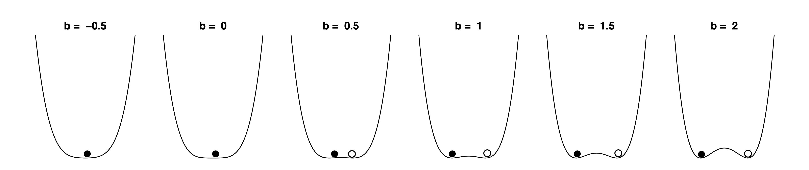
For low \(b\) there is one stable fixed point that becomes unstable. It splits up in two new attractors. As we did for the fold, we can make bifurcation diagrams showing the equilibria of X as a function of \(a\) and \(b\). Along the \(a\)-axis we see hysteresis and along the \(b\)-axis we see divergence or what is often called a pitchfork bifurcation.
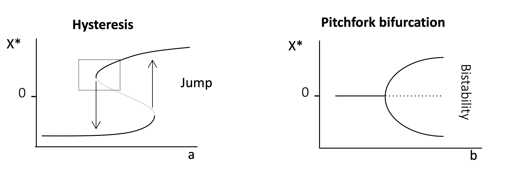
To depict the combined effects of \(a\) and \(b\), we require a three-dimensional plot, which combines the hysteresis and pitchfork diagrams.
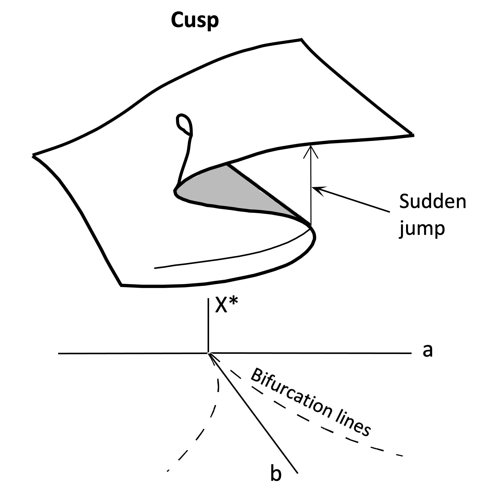
The cusp diagram can be expressed mathematically by setting the first derivative to zero:
\[ V^{'}(X) = {- a - bX + X}^{3} = 0. \tag{3.5}\]
This type of equation is called a cubic equation.2 The degenerate critical points of the cusp can be found by setting the first and second derivative to zero. This is just within reach of your high school mathematics training and I leave this as an exercise. The result is:
\[ 27a^{2} = 4b^{3}. \tag{3.6}\]
This equation defines the bifurcation lines where the first and second derivatives are both zero and sudden jumps occur (see Figure 3.10). The region between the bifurcation lines is the bifurcation set. In this region, the bifurcation has three fixed points, the middle of which is unstable. These unstable states in the middle are called the inaccessible area, colored gray in the cusp diagram. The bifurcation lines meet at (0,0,0). At this point, the third derivative is also zero. This is the cusp point.
3.3.4 Examples of cusp models
To illustrate the cusp, I always use the business card (Figure 3.11). I strongly recommend that you test this example (not with your credit card). You can play with two forces. \(Fv\) is the vertical force and the splitting control variable (\(b\)) in the cusp. \(Fh\) is the horizontal force and the normal variable (\(a\)) in the cusp. Note that you will only get smooth changes when \(Fv = 0\), but sudden jumps and hysteresis when you employ vertical force. One very important phenomenon is that the card has no ‘memory’ when the \(Fv = 0\). You can push the card to a position, but as soon as you release this force (\(Fh\) back to zero), the card moves back to the center position. This is not the case with vertical pressure. If we force the card to the left or right position it will stay there, even if we remove the horizontal force. The card has a ‘memory’.
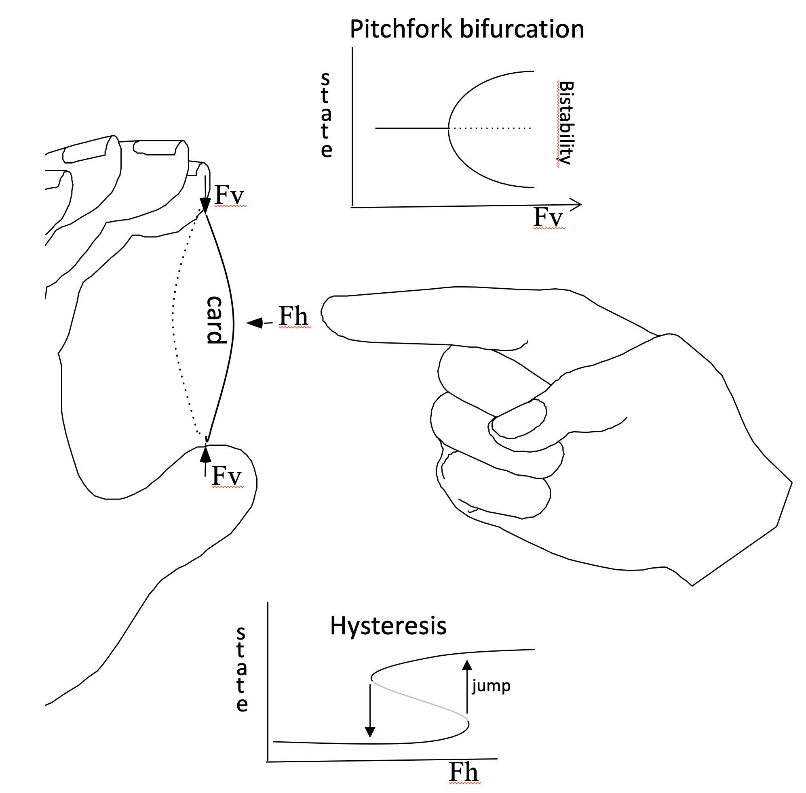
This seems simple but the mathematical analysis of such elastic bending structures is a huge topic in itself (Poston and Stewart 2014). The freezing of water is also a cusp. As an approximation, we could say that the density of water is the behavioral variable, temperature is the normal variable, and pressure acts as a splitting variable (see chapter 14 of Poston and Stewart 2014, for a more nuanced analysis). It is very instructive to study the full phase diagram of water. We do not have to know what a triple point is. What we do need to understand is that this can be viewed as a map of the equilibria. This type of mapping would be extremely useful in psychology and the social sciences.
TASOS : what happens here?
A psychological example of a cusp concerns sudden jumps in attitudes (Latané and Nowak 1994; van der Maas, Kolstein, and van der Pligt 2003). Attitudes will be discussed in much more detail in later chapters. In general, we have relatively stable attitudes toward many things in life (politics, snakes, hamburgers, and sports), but sometimes they change, and in rare cases they change radically. For example, you may suddenly become a conspiracy theorist, an atheist, or a vegetarian. One example is the attitude toward abortion.
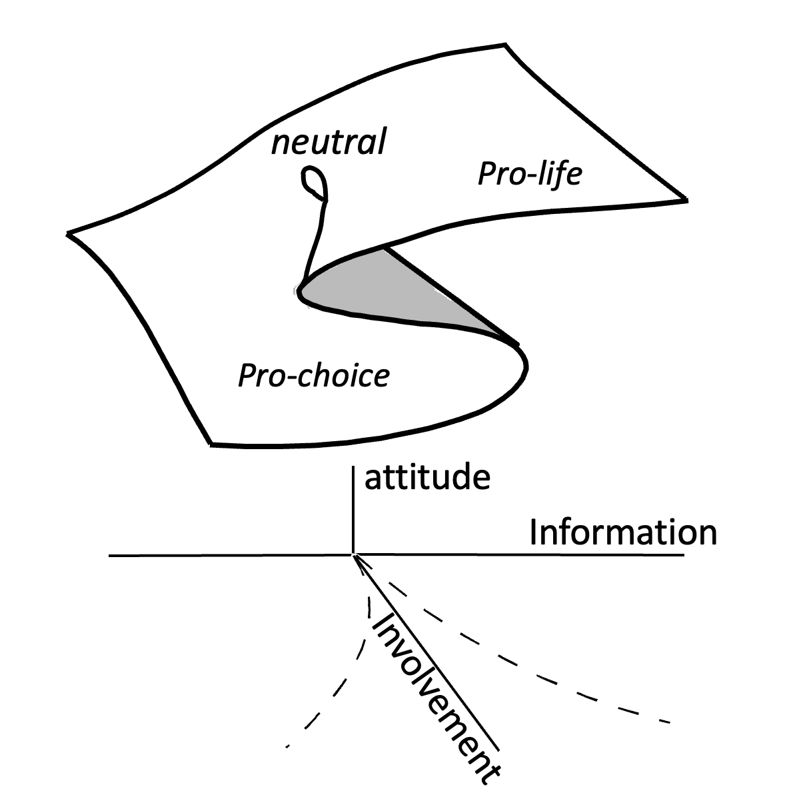
Cusp modeling begins by the definition of the states of the behavioral variable. In this case the two states of the bistable cusp are the two opposing positions, pro-life3 and pro-choice. The other state associated with \(a = 0, b = 0\) is the neutral state, an ‘I don’t know’ or ‘I don’t care’ position.
The normal (\(a\)) and splitting (\(b\)) variable are interpreted as information and involvement. Information is a collection of factors that influence whether people tend to be in the pro-life and pro-choice position. Political and religious orientation as well as personal experiences add to this overall factor. One way to construct this information variable is through a factor analysis or principal component analysis.
The splitting factor, involvement, also combines a number of effects (importance, attention). The main idea is that there are two types of independent variables. Some will work (mainly) along the normal axis and some will (mainly) impact the splitting axis.
The implications of this model are that for low involvement change is continuous (Figure 3.12). Presenting people with some new information supporting the pro-life and pro-choice position will have a moderate effect. One problem, as demonstrated with the business card, is that the uninvolved person has “no memory”. As soon as you stop influencing this person, he drifts to the neutral ‘I don’t care’ position. We have another problem when people are highly involved. Because of the hysteresis effect, it will be very difficult to persuade people with new information. When this hysteresis effect is high, persuasion just does not work. If you have been involved in political discussions, you probably have experienced that yourself.
But if the underlying change in information is large enough, attitudes can show a sudden jump. There is a lot of anectodical evidence for this, but it is very hard to capture such an effect in actual time series of attitude measures. Another effect that is consistent with the cusp model is ambivalence. In the cusp, ambivalence is not the same thing as being neutral. The neutral point is at the back of the cusp and is associated with low involvement. Ambivalence is associated with high involvement. Highly involved people with balanced information (\(a = 0)\), may oscillate between extreme positions (see Figure 5.2 in Chapter 5). Finally, the pitchfork bifurcation can explain issue or political polarization. When involvement increases in a group of neutral people, e.g., due to discussion, they may split into two extreme positions.
Another psychological example of the cusp-like behavior is multistable perception. The necker cube is a famous example. Stewart and Peregoy (1983) proposed a model in which the perception of male phase or female figure is used as a behavioral variable, the splitting variable is the amount of detail, and the normal variable is a change in detail related to the male/female distinction. The results are shown in Figure 3.13.
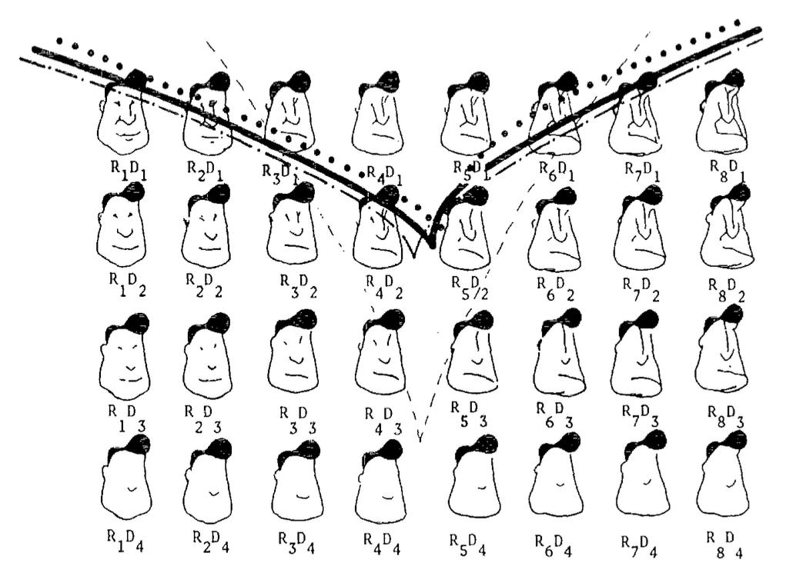
3.3.5 Higher order catastrophes
Note that the cusp is made up of folds. This is best seen in the hysteresis diagram in Figure 3.9 (see the dotted rectangle). Higher order catastrophes yield elements of cusps and folds. The swallowtail catastrophe with potential function \(V(X) = {- aX - \frac{1}{2}bX^{2} - \frac{1}{3}cX}^{3} + \frac{1}{5}X^{5}\) consists of three surfaces of fold bifurcations meeting in two lines of cusp bifurcations, which in turn meet in a single swallowtail bifurcation point. We need a four-dimensional space to visualize this, which is difficult. The Wikipedia page on Catastrophe theory has some rotating graphs that may help. The butterfly catastrophe has \(X^{6}\) as the highest term (and four control variables).
The butterfly catastrophe is of interest when we observe trimodal behavior. We will discuss this catastrophe in Chapter 6 in relation to the modeling of attitudes. I note that the butterfly catastrophe and the butterfly effect in chaos theory are two completely unrelated concepts. Other catastrophes have two instead of one behavioral variable. However, the vast majority of applications of catastrophe theory focus on the cusp, which will also be the focus of the remaining of this chapter. There are many good (but not easy) books that present the full scope of catastrophe theory (Gilmore 1993; Poston and Stewart 2014).
3.3.6 Other bifurcations
Catastrophe theory is limited to structurally stable, local bifurcations. Bifurcation theory also deals with non-structurally stable bifurcations and so-called global bifurcations.
Examples of nonstructural stable local bifurcations are the transcritical bifurcation (\(\frac{dX}{dt} = aX - X^{2})\) and pitchfork bifurcation (\(\frac{dX}{dt} = bX - X^{3})\). The pitchfork is part of the cusp and is not structurally stable because it can be perturbed by an additional term \(a\), which, if unequal to 0, will distort the pitchfork (see Figure 3.14).
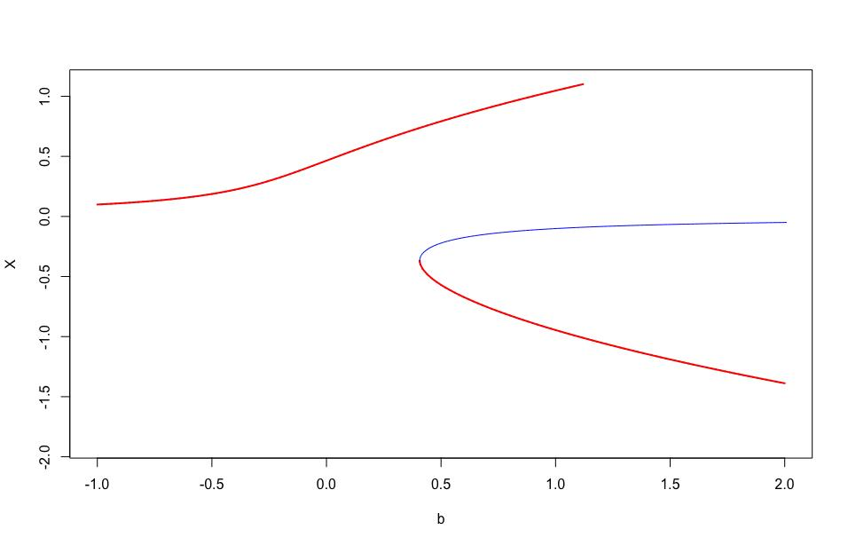
Another one we have already seen is the period doubling bifurcation. This happened in the logistic map when the fixed point changed in a limit cycle of period 2. Finally, global bifurcations cannot be localized to a small neighborhood in the phase space, such as when a limit cycle diverges (Guckenheimer and Holmes 1983). However, I don’t know of any applications of global bifurcations in psychology or the social sciences.
3.4 Building catastrophe models
3.4.1 Mechanistic models
The model of the attitude towards abortion is called a phenomenological model, as opposed to a mechanistic model. In the former one, we assume the presence of a cusp, and make hypotheses about the involved variables. In the latter, the cusp is derived from basic assumptions or first principles. The mechanistic approach is much more common in the physical and life sciences. An example is the phase transition in water described by the van der Waals equation. Poston and Stewart (2014) show how the van der Waal equation can be reparametrized to take the form of the cusp equation. The advantage is that we learn how exactly temperature and pressure are related to the control variables of the cusp. This gives us a full understanding of the dynamics of this phase transition.
One model that I will use as a psychological model in Chapter 5 is the model of the spruce budworm outbreak, which occurs every 30 to 40 years and results in the defoliation of tens of millions of hectares of trees. The model is
\[ \frac{dN}{dt} = r_{b}N\left( 1 - \frac{N}{K} \right) - \frac{BN^{2}}{A^{2} + N^{2}}. \tag{3.7}\]
Where \(N\) is the size of budworm population, \(r_{b}\) is the growth rate, \(K\) is the carrying capacity, \(B\) is the upper limit of predation, and \(1/A\) is the responsiveness of the predator.
The first part is the logistic growth equation. \(N\) will grow to \(K\) at a rate \(r_{b}\). Note that this is a differential equation, not a difference equation. There is no chaos in logistic growth in continuous time. The second part is the predation function and has a concave shape flattening out at \(B\). The curvature of this function is determined by \(A\). High \(A\) makes the concave shape less steep, meaning that predation rather slowly reacts to the increase in budworms (more about the construction of this model later).
The analytical approach to this model is to reparametrize the model so that it takes the form of a cusp. Such reparameterizations are not so easy to do yourself. The idea is to create a smaller set of new variables that are functions of the model parameters. For this model a convenient reparameterization is
\[ r = \frac{A\ r_{b}}{B}\ and\ q = \frac{K}{A}. \tag{3.8}\]
Using these two ‘constructed’ control variables, we can depict the bifurcation lines of the cusp as:
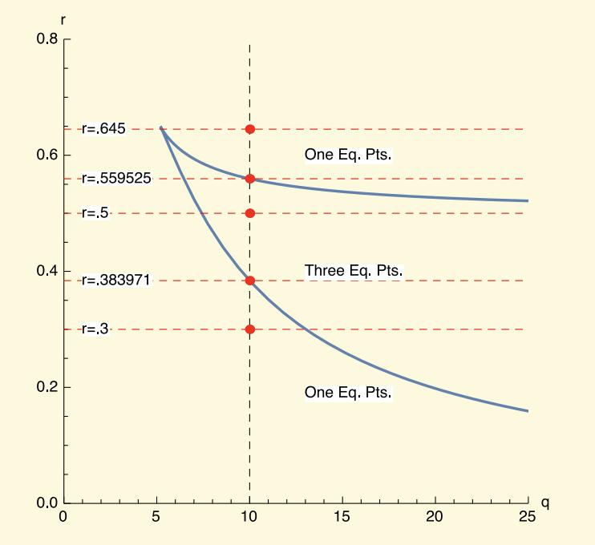
In later chapters we will discuss psychological examples of a mechanistic approach, but as far as models of transitions are concerned, these are rare. The phenomenological approach is much more common.
3.4.2 Phenomenological models
The cusp model of attitude is a typical phenomenological model. We simply assume that the cusp is a model of the attitude. Phenomenological models are less convincing than mechanistic models because they do not provide a deep understanding of the underlying mechanisms that drive the system. But in psychology and the social sciences we cannot be too picky. Compared to many other, verbally stated, attitude models, the cusp attitude model is quite precise. It implies a number of phenomena and is testable. This will be the subject of the next section.
Setting up a phenomenological model is not a trivial task either. I suggest some guidelines for setting up a model. First, define the behavioral variable. It is important to think about the bistable modes. What are they? What is the inaccessible state in-between? Can you have jumps between these states? What is neutral state at the back of the cusp? If you cannot answer these questions, you should reconsider whether a cusp is an appropriate model.
Second, select the control variables. What could be a normal variable and what could be a splitting variable. These are not easy questions. Sometimes there are too many candidates. For the cusp model of attitudes, instead of involvement, we could suggest interest, importance, emotional value, etc. In this case, I think of the splitting axis as a common factor of all these slightly different variables. In other cases, we have no good candidates. In the example in Figure 3.13, it is not clear exactly what is being manipulated along the normal axis. If you made a choice, it is good to check whether, at high values of the splitting values, variation of the normal variable may lead to sudden jumps and hysteresis. Also check whether the pitchfork bifurcation makes sense.
There is another issue here. In some phenomenological models the control variables are rotated by 45 degrees. The most famous example is Zeeman’s (1976) model dog aggression.
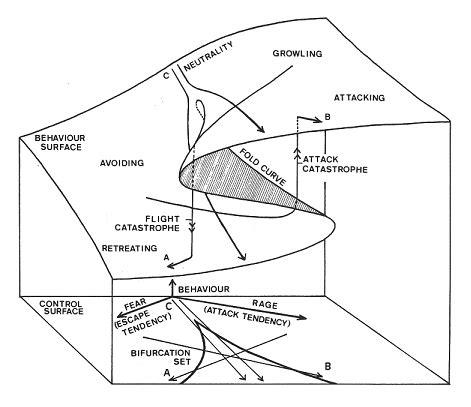
The control variables are fear and rage (see Figure 3.16). In such a rotation the normal variable is the difference between fear and rage, while the splitting variable is the sum of fear and rage. Another example can be found in our model of the speed-accuracy trade- off in reaction time tasks (Dutilh et al. 2011). When constructing a phenomenological model, these two options for setting the control variable should be considered.
To explain catastrophic drops in performance in work and sports, Hardy and Parfitt (1991) proposed a cusp model with cognitive anxiety as the splitting factor and physiological arousal as the normal factor. The idea is that at high levels of cognitive anxiety, increases and decreases in arousal lead to sudden changes, including a hysteresis effect. Hardy (1996) present furhter tests of this model. It has been criticized by Cohen, Pargman, and Tenenbaum (2003). Extension of to the butterfly model are presented in Guastello (1984b) and Hardy, Woodman, and Carrington (2004).
Cusp models have also been proposed for addiction (Guastello 1984a; Mazanov and Byrne 2006). Witkiewitz et al. (2007)] propose using distal risk as the split axis and proximal risk as the normal axis. The model is tested using the renowned dataset from Project MATCH, an 8-year, multisite investigation of the effectiveness of various treatments for alcoholism.
As a final example I mention the model for humor presented by Paulos (2008) in his fascinating book on mathematics and humor. Paulos explains his model in the context of puns. His example is “do you consider clubs appropriate for young children?” with the punchline “only when kindness fails,” which is probably only funny to people with children. Paulos uses the rotated control axis as in the dog aggression model. One axis represents the first meaning of “clubs,” the other axis represents the second meaning. The bifurcation set represents the ambiguous region. The punch line forces a catastrophic change in interpretation, accompanied by a release of tension through laughter. Interpretation is then the behavioral axis. Paulos claims that this cusp model combines cognitive incongruity theory, various psychological theories of humor, and the release theory of laughter.4
3.5 Testing catastrophe models
3.5.1 The catastrophe flags
A question I often get is: How sudden is sudden? It is claimed that climate changes are transitions between stages (e.g., ice ages), but these transitions can take hundreds of years. Even when the ball is rolling towards its new minimum, it takes time to roll. So sudden transitions are not instantaneous.
But then what is the difference with an acceleration, such as we see in a logistic growth pattern? The time course of an acceleration and a sudden jump will look something like this:
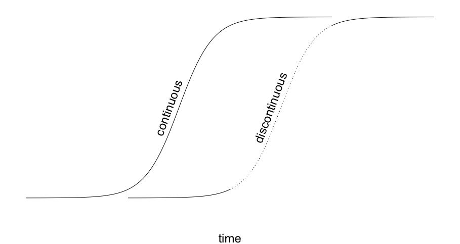
Thus, in terms of time series data, they may look exactly the same. The difference is that in the continuous case the intermediate values are stable. It can be understood as a quadratic minimum that changes its position quickly. If we stop the process by freezing the manipulated control variable in the process, the state will remain at an intermediate value. These intermediate values are all stable values. If we freeze the manipulated variable in a discontinuous process, it will continue to move to a stable state. In this case, the intermediate state is unstable. The ball keeps rolling.
In practice using data, this is a difficult distinction to make. It means that simple time series are not sufficient to distinguish accelerations from phase transitions. So how do we distinguish between the two processes? In the context of catastrophe theory, Gilmore (1993) proposed the catastrophe flags. These are cusp related phenomena that can be seen in the data. While no single one of these is enough to indicate the cusp, when considered together they provide compelling evidence for its existence.
In the upcoming subsections, I will provide definitions for the flags and illustrate their applications in psychology using examples. The first flag is the sudden jump.
3.5.1.1 Sudden jump
The sudden jump is large fast change in equilibrium behavior. Although the sudden jump is not sufficient (it could be due to an acceleration), demonstrating a sudden jump in time series is useful (also in relation to other flags). Statistical detection of sudden jumps is possible using a number of techniques. Figure 3.18 presents raw weekly measurements of depressive symptoms using the SCL-90-R depression subscale of a patient who gradually quitted antidepressant medication during the study. The participant and researchers were blind to the dose reduction scheme (Wichers, Groot, and Psychosystems 2016). One question was whether this reduction led to a sudden jump to the depressed state. Using a change point detection method (James and Matteson 2014), we found a jump at 18 weeks with a bootstrapped p-value of .005 (with the null hypothesis of no change point).
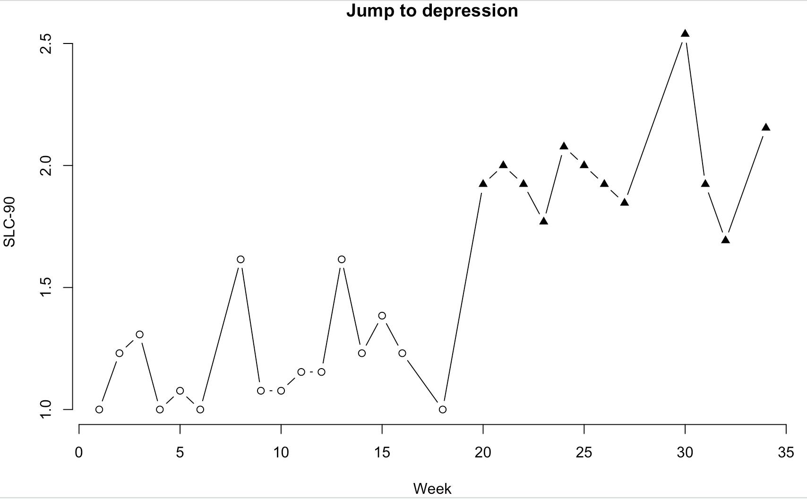
Many methods for change point analysis have been developed and compared in Burg and Williams (2022).
The code for this figure is:
layout(t(1)); par(mar=c(4,4,1,1))
x <- read.table('data/PNAS_patient_data.txt',header=T)
library(ecp) # if error: install.packages('ecp')
e1 <- e.divisive(matrix(x$dep,,1),sig=.01,min.size=10)
plot(x$week,x$dep,type='b',pch=(e1$cluster-1)*16+1,xlab='Week',ylab='SLC-90',bty='n',main='Jump to depression')3.5.1.2 Multimodality
Multimodality (in the case of the cusp bimodality) is an important and easy-to-use flag, as it can be tested with cross-sectional data. Finite mixture models have been developed to test for multimodality in frequency distributions (McLachlan, Lee, and Rathnayake 2019).
An example is shown in Figure 3.19. These data come from a conservation anticipation task, where children have to predict the level of water in the second glass when it is poured over. The resulting data and the fit of a mixture of two normal distributions are shown on the right. The data are clearly bimodal supporting the hypothesis of a transition in conservation learning (Van der Maas and Molenaar 1992b). These data were used in Dolan and van der Maas (1998) to fit multivariate normal mixture distributions subject to a structural equation model.
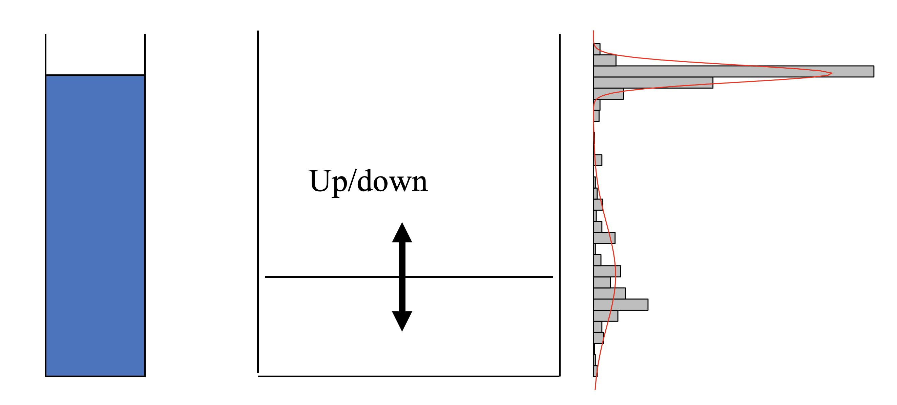
The code is:
x=unlist(read.table('data/conservation_anticipation_item3.txt'))
library(mixtools) # if error: install.packages('mixtools')
result=normalmixEM(x)
plot(result,whichplot=2,breaks=30)There is a whole field in statistics focused on multimodality, mixtures and clustering. There are some blogs that present overviews of the relevant R-packages (Arnaud 2021). Several detailed examples from psychology, using hidden Markov models, are presented in Visser and Speekenbrink (2022).
The advantage of multimodality over the sudden jump is that we can use it with cross-sectional data. To capture a sudden jump in a development process, you need a lot of high-frequency data. Sudden shifts in opinion are also rare. But it is easy to collect data on large numbers of people who are asked to make judgments about statements on an issue such as abortion. If these judgments are bimodally distributed, this is consistent with a phase transition. Bimodal data may also be produced by a process of acceleration, with time series consisting mainly of data values before and after the acceleration. So, bimodality is not sufficient. It can be considered necessary, so I always suggest starting with cross-sectional multimodal studies. If they fail, you might reconsider your hypothesis. I have often looked for multimodality in measures of arithmetic learning and never found anything convincing, which made me rethink my hypothesis.
3.5.1.3 Inaccessibility
Inaccessibility means that certain values of the behavioral variable are unstable. The business card is a good example. Given some vertical pressure, we can try what we want but we cannot force the card to stay in the middle position, it is unstable. Inaccessibility is relevant to reject the alternative hypothesis that the sudden jump and bimodality are due to an acceleration.
In Experiment 2 of Dutilh et al. (2011) we focused on this flag. Our hypothesis was that in simple choice response tasks there is a phase transition between a fast-guessing state and a slower stimulus-driven response state. The idea is that if we force subjects to speed up, there will be a catastrophic jump in performance (from almost 100% correct to 50% correct).
We created a game in which subjects responded to a series of simple choice items (a lexical decision task). The length of the series was not known to the subject. At the end of a series, they were rewarded according to how close their percentage correct was to 75%. Speed was also rewarded, but much less. So, we asked the subject to be in the inaccessible state. The alternative hypothesis, based on information accumulation models, was that there was no phase transition and that responding with 75% accuracy required the correct setting of a boundary (see Section 5.2.1).
It appeared that subjects solved the task by switching between the fast-guessing mode and the slower stimulus-controlled mode, even when instructed according to the alternative model. Thus, the 75% intermediate state appears to be unstable.
3.5.1.4 Divergence
Divergence or the pitchfork bifurcation requires the manipulation of the splitting variable. In the case of attitudes, we hypothesize this to be involvement or some related variable. In van der Maas, Kolstein, and van der Pligt (2003) we re-analyzed a dataset from Stouffer et al. (1949), which Latané and Nowak (1994) presented as evidence for the cusp model. The attitude concerned demobilization (from 0, unfavorable, to 6, favorable) and respondents were asked to indicate how strongly they felt about their answer (from intensity 0 to intensity 5). For low intensities of feeling the data are normally distributed whereas for higher intensities data are bimodally distributed (see Figure 3.20).
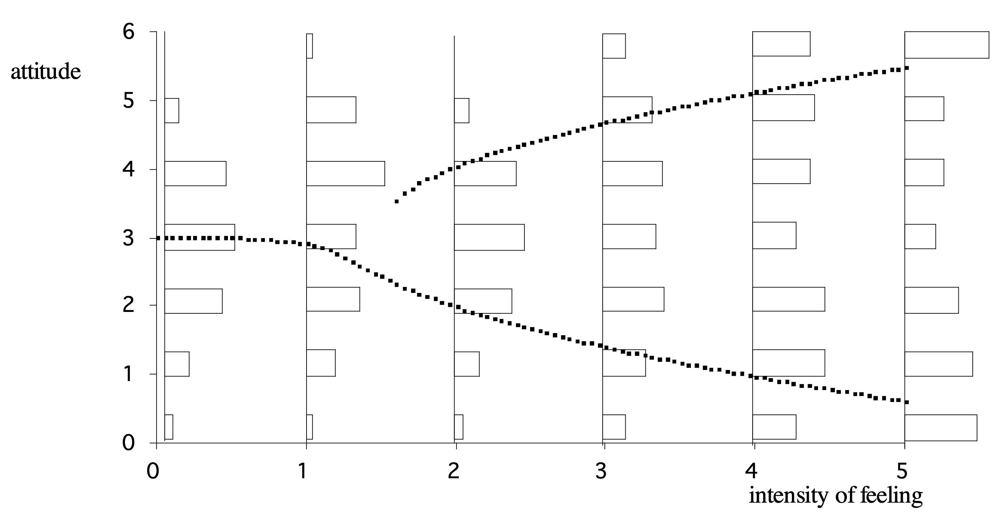
3.5.1.5 Hysteresis
Hysteresis, the lagging behind of the sudden jump, requires sophisticated manipulation of the normal control variable. We need to slowly increase and decrease this variable and test whether sudden jumps occur with a delay. We have demonstrated hysteresis in proportional reasoning using Piaget’s balance scale test in which a specific dimension (distance from the fulcrum) was systematically varied (Jansen and Van der Maas 2001a). We also hypothesized that speeding up subjects in response time tasks would eventually lead to a catastrophe in accuracy. To support this claim, we demonstrated bimodality in response times and hysteresis in the speed-accuracy trade-off (Dutilh et al. 2011). To support the cusp model of multistable perception we used the quartet motion paradigm (Ploeger, Van Der Maas, and Hartelman 2002). In this perceptual paradigm two lights are presented simultaneously, first a pair from two of the diagonally opposite corners of the rectangle, and then a second pair from the other two diagonally opposite corners of the rectangle. Usually, either vertical or horizontal apparent motion is perceived. By gradually increasing or decreasing the aspect ratio (i.e., the ratio of height to width of the quartet), hysteresis in the jumps between the two percepts was demonstrated (see Figure 3.21).
In Ploeger, Van Der Maas, and Hartelman (2002) we used a special design, the method of modified limits, to rule out the alternative explanation that hysteresis is simply due to delayed responses. It could be that the switches always occur in the middle (at an aspect ratio of 1), but the self-report is delayed. In the modified limits method, subjects do not respond during a trial, but only after the entire trial. By varying the length of the trials, it is possible to determine at which parameter value the subject perceives a switch.
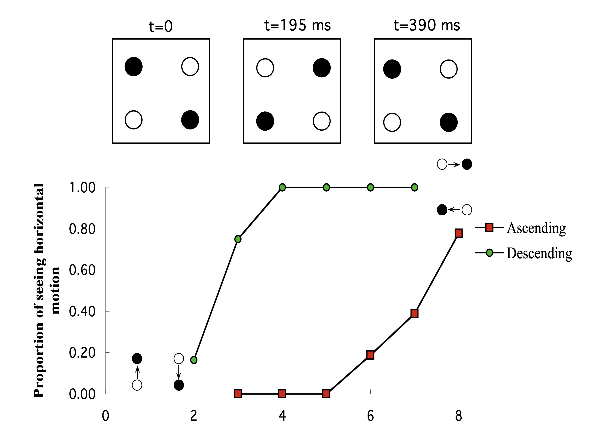
3.5.1.6 Anomalous variance, divergence of linear response and critical slowing down
Gilmore’s last three flags, anomalous variance, divergence of linear response and critical slowing down, are indicators that occur near the bifurcation lines. They are also known as early warning systems and are a popular line of research (Dakos et al. 2012).
Anomalous variance occurs because near a bifurcation point the second derivative diminishes, meaning that the minimum becomes less deep. Assuming there is always some perturbation of the state, this will lead to larger fluctuations in the state.
Divergence of linear response is the size of the effect of a small perturbation of the state, which will be greater near a bifurcation point. It will also take longer to return to equilibrium. The latter is known as critical slowing down and is also studied in other approaches to nonlinear dynamical systems (e.g., synergetics (Haken 1977). Examples of applications in psychology can be found in Leemput et al. (2014) and Olthof et al. (2020). A somewhat critical review is provided in Dablander et al. (2023).
In my experience, the problem with early warning signals is that both type 1 and type 2 errors should be low for predicting transitions. This is challenging even in simulations, let alone in noisy psychological data. It would be fantastic if these early warnings really worked. For example, being able to predict a relapse into depression or addiction would be of great therapeutic value.
The catastrophe flags together provide a research methodology for phase transition research in psychology. A single flag may not be sufficient, but the combination is. For example, the combination of evidence for inaccessibility and hysteresis is convincing. I have given psychological examples of most of the flags. Which flags to use in a particular case depends on the knowledge and experimental control of the control variables. Another approach is to fit the cusp model directly to the data. This is the subject of the next section.
3.5.2 Fitting the cusp to cross-sectional data
3.5.2.1 Cobb’s maximum likelihood approach
In a series of papers Loren Cobb an colleagues (Cobb and Zacks 1985; Cobb 1978) developed a maximum likelihood approach to fit the cusp catastrophe to data consisting of cross-sectional measurements of \(X\), \(a\) and \(b\). We have implemented this approach in a cusp R package described in Grasman, van der Maas, and Wagenmakers (2009).
The basic idea is to make catastrophe theory, a deterministic theory, stochastic by adding a stochastic term, called Wiener noise (with variance \(\sigma^{2})\), to Equation 3.25:
\[ dX = - V^{'}(X)dt + \sigma dW(t). \tag{3.9}\]
We will discuss this type of stochasticity later, but it is important to note that it is not the same as measurement noise. Measurement noise, i.e., \(\varepsilon\) in \(Y = X + \varepsilon\), does not affect the dynamics of \(X\). Wiener noise does, it is part of the updating equation of \(X\) itself. This stochastic differential equation is associated with a probability distribution of the form
\[ f(X) = \frac{1}{{Z\sigma}^{2}}e^{\frac{- V(X)}{\sigma^{2}}}, \tag{3.10}\]
where Z is a normalizing constant6 necessary to ensure that the area under \(f(X)\) is 1. This may look complicated but for the quadratic case \(V(X) = {\frac{1}{2}X}^{2}\), this results in the standard normal distribution, with \(Z = \frac{\sqrt{2\pi}}{\sigma}\).
As in the case of the normal distribution we want to allow for some transformations of the variables. To simplify the necessary statistical notation, we write the cusp as \(V(y) = {- \alpha y - \frac{1}{2}\beta y^{2} + \frac{1}{4}y}^{4}\). The probability distribution for the cusp is
\[ f(y) = \frac{1}{{Z\sigma}^{2}}e^{\frac{\alpha y + \frac{1}{2}\beta y^{2} - \frac{1}{4}y^{4}}{\sigma^{2}}}. \tag{3.11}\]
As in regression models, the cusp variables are modelled as linear function of measured variables. That is, the dependent variables \(Y_{i1},\ Y_{i2},\ldots,Y_{ip}\) and the independent variables \(X_{i1},\ X_{i2},\ldots,X_{iq}\), for subjects \(i = 1,\ldots,n\), are related to the cusp variables as follows:
\[y_{i} = w_{0} + w_{1}Y_{i1} + w_{2}Y_{i2} + \ldots + w_{p}Y_{ip} \\ \alpha_{i} = a_{0} + a_{1}X_{i1} + a_{2}X_{i2} + \ldots + a_{q}X_{iq} \\ \beta_{i} = b_{0} + b_{1}X_{i1} + b_{2}X_{i2} + \ldots + b_{q}X_{iq} \tag{3.12}\]
By estimating these regression parameters, we fit the cusp model to empirical data. The cusp package in R makes this possible. I will first demonstrate this using simulated data. This is my number one rule when using statistical techniques: never use a statistical technique on real data before you have tested it on simulated data. First, it forces you to understand what the statistical technique actually does, and second, it gives you a way to test the power and investigate violations of the technique’s assumptions.
library(cusp) # if error: install.packages('cusp')
set.seed(1)
X1 <- runif(1000) # independent variable 1
X2 <- runif(1000) # independent variable 2
# to be estimated parameters
w0 <- 2; w1 <- 4; a0 <- -2; a1 <- 3; b0 <- -2; b1 <- 4
# sample Y1 according to cusp using rcusp and the chosen parameter values
Y1 <- -w0/w1 + (1/w1) * Vectorize(rcusp)(1, a0+a1*X1, b0+b1*X2)
data <- data.frame(X1, X2, Y1) # collect ‘measured’ variables in dataI recommend doing some descriptive analysis first. With hist(data$Y1) we can inspect whether there is some indication of bimodality. X2 is the splitting variable so perhaps we see stronger bimodality with hist(data$Y1[data$X2>mean(data$X2)]). The function pairs in R, pairs(data), is also always recommended. In this perfect simulated case, you will already see strong indications of the cusp. Now we fit the full model with alpha and beta both as function of X1 and X2.
fit <- cusp(y ~ Y1, alpha ~ X1+X2, beta ~ X1+X2, data)
summary(fit) Summary provides the following table:
| Coefficients: | Estimate | Std.Error | z-value | Pr(>|z|) | |
|---|---|---|---|---|---|
| a[(Intercept)] | -2.13 | 0.19 | -11.0 | < 2e-16 | *** |
| a[X1] | 3.11 | 0.22 | 14.2 | < 2e-16 | *** |
| a[X2] | 0.15 | 0.17 | 0.9 | 0.39 | |
| b[(Intercept)] | -2.29 | 0.34 | -6.7 | 2.66e-11 | *** |
| b[X1] | -0.09 | 0.33 | -0.3 | 0.79 | |
| b[X2] | 4.40 | 0.27 | 16.5 | < 2e-16 | *** |
| w[(Intercept)] | 1.98 | 0.07 | 27.6 | < 2e-16 | *** |
| w[Y1] | 3.97 | 0.10 | 38.0 | < 2e-16 | *** |
Note that we fit a model with too many parameters. We also estimated \(a_{2}\) and \(b_{1}\) (because the model was specified as alpha ~ X1+X2, beta ~ X1+X2). These estimates are not significantly different from 0. The other parameters are estimated reasonably close to their true values, since the true values fall within the confidence interval of the estimates (defined by twice the standard error on either side). We expect a better fit in terms of AIC and BIC if we fit a reduced model without \(a_{2}\) and \(b_{1}\).
fit_correct_model <- cusp(y ~ Y1, alpha ~ X1, beta ~ X2, data)
summary(fit_correct_model)| R.Squared | logLik | npar | AIC | AICc | BIC | |
|---|---|---|---|---|---|---|
| Full model | 0.428 | -1058.7 | 8 | 2133.3 | 2133.5 | 2172.6 |
| Reduced model | 0.426 | -1059.0 | 6 | 2130.0 | 2130.1 | 2159.5 |
The next simulation demonstrates that we can detect hysteresis using this approach. We simulate data with \(- 2 < \alpha < 2,\) and fixed \(\beta\). If \(\beta < 0\) we have no hysteresis, but if \(\beta > 0\) we do have hysteresis. With the code below we simulate datasets for different \(\beta\), and compare the goodness of fit between the linear and cusp model. The figure summarizes the results. Note that a lower BIC indicated the better fitting model.
set.seed(10)
n <- 500
X1 <- seq(-1,1,le=n) # rnorm(n) #runif(1000) # independent variable 1
a0 <- 0; a1 <- 2; b0 <- 2 # to be estimated parameters
b0s <- seq(-1,2,by=.25)
i <- 0
dat <- matrix(0,length(b0s),7)
for (b0 in b0s)
{
i <- i + 1
Y1 <- Vectorize(rcusp)(1, a1 * X1, b0)
data <- data.frame(X1, Y1) # collect ‘measured’ variables in data
fit <- cusp(y ~ Y1, alpha ~ X1, beta ~ 1, data)
sf <- summary(fit)
dat[i, ] <- c(b0, sf$r2lin.r.squared[1], sf$r2cusp.r.squared[1],sf$r2lin.bic[1], sf$r2cusp.bic[1],sf$r2lin.aic[1], sf$r2cusp.aic[1])
}
par(mar=c(4,5,1,1))
matplot(dat[,1],dat[,4:5],ylab='Bic',xlab='b0',bty='n',type='b',pch=1:2,cex.lab=1.5)
legend('right',legend=c('linear','cusp'),lty=1:2,pch=1:2,col=1:2,cex=1.5)
abline(v=0,lty=3)
text(-.5,800, 'no hysteresis',cex=1.5)
text(.5,800, 'hysteresis',cex=1.5)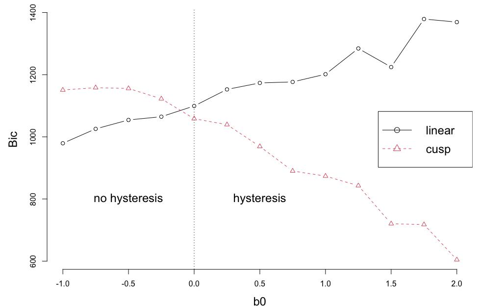
3.5.2.2 Empirical examples
In Grasman, van der Maas, and Wagenmakers (2009) we present several examples with real data. As another example, we use Stoufer’s data, which we used as an example of divergence before (see Figure 3.20).
x <- read.table('data/stoufer.txt')
colnames(x) <- c('IntensityofFeeling','Attitude')
fit <- cusp(y ~ Attitude, alpha ~ IntensityofFeeling, beta ~ IntensityofFeeling, x)
summary(fit)Inspection of the parameter estimates shows that, as expected, Intensity of Feeling only loads on the splitting axis and not on the normal axis. This is the location of the data in the bifurcation set (plot(fit)).
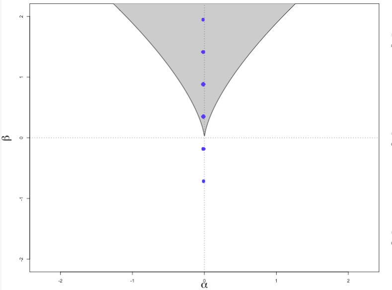
Another example is the conservation data set of Bentler (1970), which contains the scores on a 12 item test from a conservation test of 560 children from 8 different age groups. These data are expected to be bimodal and to move along the normal axis (Van der Maas and Molenaar 1992b).
x <- read.table('data/bentler.txt',header=T)
layout(t(1:8))
age <- c('age 4 to 4.5','age 4.5 to 5','age 5 to 5.5','age 5.5 to 6','age 6 to 6.5','age 6.5 to 7','age 7 to 7.5','age 7.5 to 8')
for(i in 1:8)
{
if(i==1) {par(mar=c(4,3,2,1));names=0:12} else {names='';par(mar=c(4,1,2,1))}
barplot(table(factor(x[x[,1]==i,2],levels=0:12)),horiz=T,axes=F,main=age[i],xlab='',names=names,cex.main=1.5,cex.names=1.5)
}
fit <- cusp(y ~ score, alpha ~ age_range, beta ~ age_range, x)
summary(fit)
plot(fit)This is supported by results of cuspfit. You can verify that a model with beta ~ 1, fits better according to the AIC and BIC.
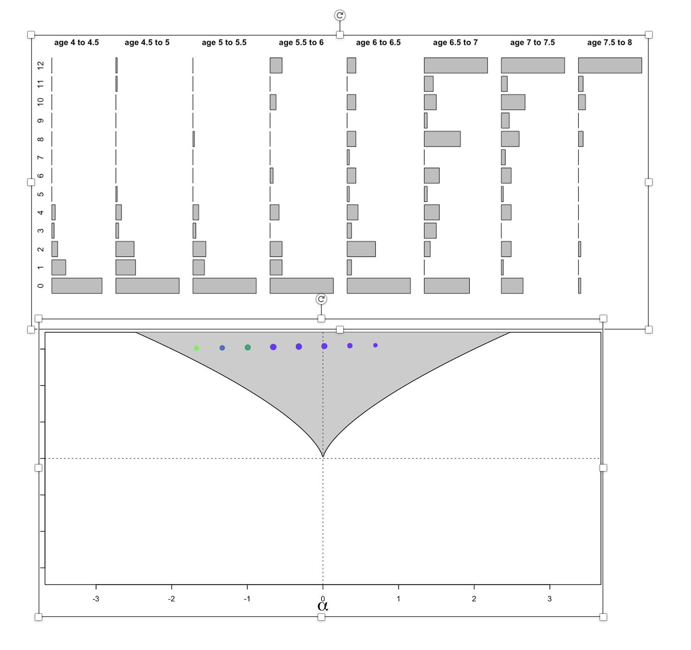
A great exercise we have often used in the classroom is to build a Zeeman machine, collect data with the machine and fit the cusp model to the data (see Grasman, van der Maas, and Wagenmakers (2009), for details). This machine was invented by Zeeman to demonstrate the properties of the cusp. Our students were rewarded for the quality of the model and the artistic value of their Zeeman machine.
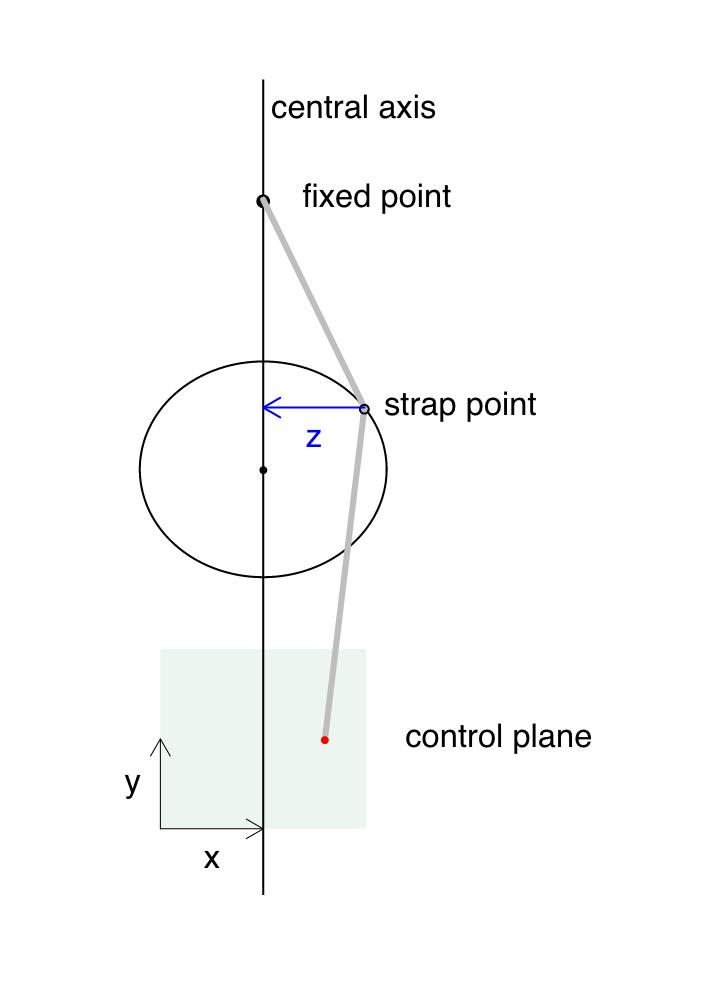
3.5.2.3 Evaluation
I make a few final remarks. First, Cobb’s method is not valid for time series. Data points should be independent. To test for hysteresis in time series other approaches are required. One option is to use hidden Markov models as in Dutilh et al. (2011).
The second remark is that there are some issues with the approach of Cobb that are due to fundamental differences between probability distributions and potential functions. The latter can be transformed in many ways (so called local diffeomorphisms) without changing the qualitative properties of the cusp. With the added constraint on probability distributions (area = 1), the same transformations can lead to qualitative effects, such as a change in the number of modes. Wagenmakers et al. (2005) suggest a solution to this problem for time series.
The third remark is that two alternative approaches have been proposed. Both Guastello’s (1982) change score least square regression approach and the Gemcat approach (1987) use the first derivative of the cusp as point of departure. A problem with both approaches is that they do not distinguish between stable and unstable equilibrium states. Data points in the inaccessible region improve the fit of the model, whereas they should decrease the fit. Alexander et al. (1992) provide a detailed critique.
3.6 Criticism of catastrophe theory
One often speaks of the rise and the fall of catastrophe theory (Rosser 2007). The hype following Zeeman’s famous Scientific American paper7 (Zeeman 1976), in which he introduced the phenomenological application of catastrophe theory in the behavioral and social sciences, led to a strongly worded reply by Zahler and Sussmann (1977) in Nature.
Because people still refer to this paper when we use catastrophe theory in our work, let us briefly respond to the main points of criticism made by Zahler and Sussmann. I note that in the introduction to their paper they state that there may be legitimate uses of catastrophe theory in physics and engineering. Moreover, they do not question the correctness or importance of catastrophe theory as a purely mathematical subject.
They raise ten points, some of which we have already addressed. For example, their first point is about how sudden a jump actually is, but they call this a less serious criticism. As I explained earlier, it is not the suddenness that matters, but whether or not the intermediate states are unstable.
A number of points are about inferring a cusp from data, which was indeed done rather superficially in Zeeman’s earlier work. They pointed out that there are no testable predictions, that the location of the cusp can be shifted, and that there is no way to decide whether the data fit the cusp. We hope to have shown that these problems are largely solved. The catastrophe flags allow us to make new testable predictions, and with Cobb’s maximum likelihood approach we can fit the model as we would any statistical model in modern science. Of course, one can be critical of the use of statistics in psychology and the social sciences, but these criticisms are not specific to catastrophe theory.
Another somewhat inconsistent line of criticism is that many of catastrophe models in psychology and the social sciences are just wrong and inconsistent with the data (which could be true), while it is also claimed that Zeeman’s models are not falsifiable. You cannot have it both ways, if it is wrong or inconsistent with data, it is falsifiable. Still, I agree that it is important to think about falsifiability. Theories in psychology tend to be moving targets. As soon as someone finds an empirical result that contradicts the theory, the theory is quickly modified.
Then they point out that catastrophe theory theorists often try to make a discrete variable into a continuous one. Their example is aggression, which they believe is inherently discrete. They call Zeeman’s interpretation of aggression as a continuous family of behaviors absurd and utterly meaningless. This may be a bit strong. We can think of situations in which aggression can vary from mild to severe. Aggression can vary from verbal to physical, directed at a person’s belongings, mild physical directed at the person, to severe physical. A rich ordering of aggressive acts is very useful for describing domestic violence. Sometimes the change along these acts or variants is gradual, while in other circumstances the change is sudden. Whether such an ordering can be treated as a quantitative continuum is one of the most difficult questions in our field (Borsboom et al. 2016; Michell 2008).
The last point of Zahler and Sussmann is that there are better alternatives, such as quantum mechanics, discrete mathematics, and bifurcation theory. There is work on quantum mechanics in psychology (especially in the context of consciousness), but whether this will lead to breakthroughs in this field remains to be seen. Discrete mathematics may be an alternative in some cases (e.g., to model symbolic thinking). I see catastrophe theory as a special branch of bifurcation theory, especially useful when the system under study is difficult to describe in terms of mathematical equations. This goes back to the distinction between phenomenological and mechanistic models. I think we should put more effort into developing mechanistic models based on first principles. More on this in the next chapters.
Loehle (1989) present an excellent discussion on the usefulness of catastrophe theory in the context of modelling ecosytems. He concluded that “an unresolved problem in applying catastrophe models is that of testing the goodness of fit of the model to data”, but this problem has now been largely solved.
3.7 Conclusion
Psychologists are concerned with types and classes, stages and phases, and the transitions between them. Our thinking about transitions becomes much clearer and more advanced when we know the basics of bifurcations.
Catastrophe theory comes with a toolbox for behavioral and social sciences. We can build phenomenological models, test for catastrophe flags, and even fit cusp models to data. With the development of this toolbox, most of the criticisms of catastrophe theory lose their relevance.
But there are opportunities for further improvements. Phenomenological models have limited explanatory power. As we will see in later chapters, it is possible to create more mechanistic models that support the use of phenomenological models. In Chapter 6, I will discuss the Ising network model for attitudes, the behavior of which is governed by the cusp model I introduced for attitudes toward abortion.
3.8 Exercises
The equilibria of the fold are \(X = \pm \sqrt{\frac{a}{3}}\). This can can be checked by setting the first derivative to zero. Show this. (*)
In Zeeman’s dog aggression model fear and rage are ‘rotated’ control variables. How can we translate this to a model with unrotated axes? Provide the equations that specify the normal and splitting axis as function of fear and rage. (*)
Derive the equation for the bifurcation lines of the cusp (\(27a^{2} = 4b^{3})\), by setting the first and second derivatives to zero. Plot the bifurcation lines in GeoGebra or Desmos. (**)
Some insight into the butterfly catastrophe \(V(X) = {- aX - bX^{2} - cX}^{3} - dX^{4} + X^{6}\) can be gained by entering the equation in free online graphing calculators such as DesMos or GeoGebra. Set a, b, c, d to 0, -5, 0, 5. Then start varying a and c. What is the difference in the effect of these two parameters on the appearance and disappearance of attractors? (*)
Set up a phenomenological cusp for falling in love. Follow my guidelines (see Section 3.3.1). (**)
Check whether indeed the Bentler data fit better with when age_range only loads on the normal axis (according to the AIC and BIC). What is the correct specification of beta in cusp() in this case? (*)
n=500 z = Vectorize(rcusp)(1, .7*rnorm(n), 2+2*rnorm(n)) # sample z x = rnorm(n) y = rnorm(n) data <- data.frame(z,x,y) # collect variables in data
What is the best fitting cusp model (according to the BIC) for this tricky data set? Why? (**)
- Build a Zeeman machine, collect data and fit the cusp (see Example III of Grasman, van der Maas, and Wagenmakers 2009). What is your best fitting model? Provide a plot of the data in the bifurcation set and a picture of your Zeeman machine. (**)
Learning a particular conservation task does seem to be rather sudden, but there could easily be two years between learning conservation of number and conservation of volume (Kreitler and Kreitler 1989) . This is inconsistent with the stage theory.↩︎
The cubic equation that cannot solved easily. This is due to the fact that the cusp is not a function of the form \(y = f(x)\). Functions assign to each element of \(x\) exactly one element of \(y\). But in bistable systems we assign two values of \(y\) to one value of \(x\).↩︎
Perhaps better to call this view anti-choice↩︎
Given these guidelines and examples it is an interesting exercise to develop one’s own cusp model, for example, for falling in love. This is a tricky exercise.↩︎
Many different t notations exist for his. Perhaps clearer is \(dX(t) = - V^{'}\left( X(t) \right)dt + \sigma dW(t)\), as \(dX\) and $ dW\ $ depend on time.↩︎
For consistency with later chapters, I define \(Z\) differently from the notation in (Grasman, van der Maas, and Wagenmakers 2009). It is the inverse of \(Z\) in that paper.↩︎
I recommend the BBC documentary “Case Study Catastrophe Theory Maths Foundation Course”
(https://www.youtube.com/watch?v=myDvcvox1V4&t=1435s) to see Zeeman at work.↩︎